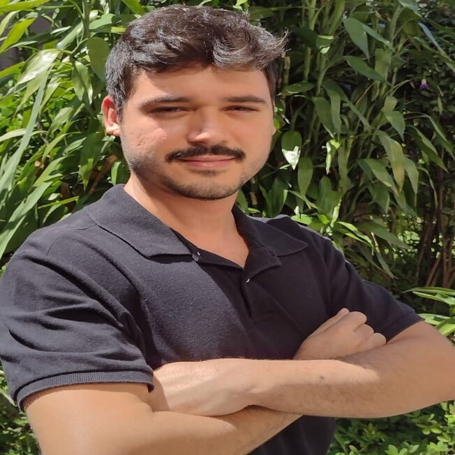

Willian Paulino
Desenvolvedor Full Stack (student)
Perfil Pessoal
Engenheiro biotecnológico de formação, tenho especialização em gestão de projetos e estou migrando para tecnologia, com foco em desenvolvimento full stack.
Habilidades e Competências
- ▪ Lean Six Sigma (green-belt).
- ▪ Framework Scrum.
- ▪ Análise de dados (Excel, PBI e Minitab).
- ▪ HTML5, CSS3 e javaScript.
- ▪ Comunicação e problem solving.
- ▪ Mentalidade data-driven.


Histórico Profissional
Facilitador de Treinamento
DNC Group (ago/2021 - atual)
- ▪ Atuo conduzindo os alunos do curso Imersão de projetos em dinâmicas de grupo.
- ▪ Análise de desempenho individual e coletivo dos alunos.
- ▪ Explicações sobre Lean Six Sigma, Scrum, Estatística Inferencial, Power BI, Excel e Minitab.
Project Leader - Student
DNC Group (mar/2021 - jul/2021)
- ▪ Product Owner, elo de comunicação entre os stakeholders do projeto.
- ▪ Análise estatística e desenvolvimento de uma macro para controle do processo.
- ▪ Resultado: redução de desperdício em 8% no processo alvo.
- ▪ Condecorações: Top 3 projetos; Projeto de excelência; Top 3 alunos; Aluno de honra.
Histórico Educacional
Desenvolvimento Full Stack - Cursando
Programa Desenvolve & Oracle Next Education (dez/2021 - out/2022)
- ▪ 600h formação Front-end, Back-end, Mobile e Dados.
- ▪ ONE: 160h formação Front-end. 80h formação Java. 120h Formação Empreendedorismo e Desenvolvimento Pessoal.
- ▪ 26 cursos concluídos em 4 meses.
Bacharelado em Engenharia Biotecnológica
Universidade Estadual Paulista - UNESP (mar/2015 - dez/2020)
- ▪ 6º Aluno com melhor desempenho. CR = 8.3
- ▪ Desenvolvi pesquisa no laboratório de Microbiologia Industrial, produzindo e purificando lipazes microbianas.
- ▪ 8 campeonatos de futebol disputados com a camisa da UNESP. 1 título de campeão, 2 vice-campeonatos e um histórico 3º lugar na Série A do InterUnesp.